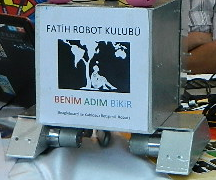

Dizayn
Projemiz genel hatlarýyla: Ýstemci taraf ile TCP protokolu üzerinden wireless haberleþme kurulmasý ve Beagleboard ile Arduino'nun seri iletiþim kullanarak haberleþtirilmesi ve üzerinedir. Yazdýðýmýz program TCP istemcisinden gelen haberleþme paketlerini arduino'ya eþ zamanlý olarak göndermektedir.
Projemiz ucuz maliyetli, geliþtirilebilir, internet üzerinden kontrol edilebilen bir gömülü sistem(embedded system) dir. Yaptýðýmýz robot üzerindeki kameradan gelen görüntüyü canlý yayýnla vermektedir. Ýnternet üzerindeki görüntüyü alan bilgisayar baþýndaki kullanýcý, robotu sað-sol ve ileri-geri hareket ettirebilmektedir.
Linux tabanlý bir iþletim sisteminin bir mikrodenetleyici kart ile iletiþiminin saðlanmasý ve bu vasýta ile sistemin tüm kontrolünün saðlanmasýdýr. Linux tabanlý iþletim sistemini kurduðumuz kart Beagleboard adý verilen üzerinde Texas Instruments firmasýna ait ARM Cortex-A8 iþlemci taþýmaktadýr. Bu kartýn usb çýkýþý kameradan görüntü almak ve modeme baðlanabilmek için kullanýlmýþtýr.
Mikrodenetleyici olarak ise Atmel 328 tabanlý açýk kaynak bir proje olan Arduino kullanýlmýþtýr. Arduino bir çok farklý modelle elektronik piyasasýna çýkmýþ oldukça kararlý çalýþan, programlamasý ve uygulamasý diðer mikrodenetleyici kartlarýna nazaran kullanýþlý, giderek yaygýnlaþan bir karttýr. Projemizde kullandýðýmýz model Arduino UNO'dur. Beagleboard Arduino ile Seri Portu kullanarak iletiþim kurmaktadýr.